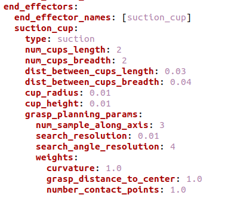
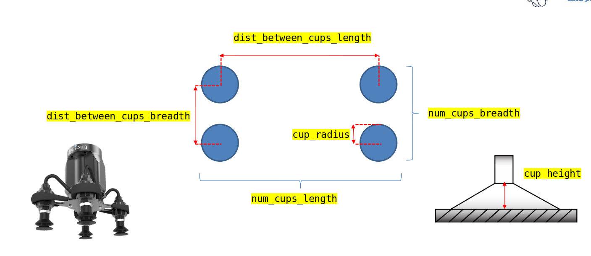
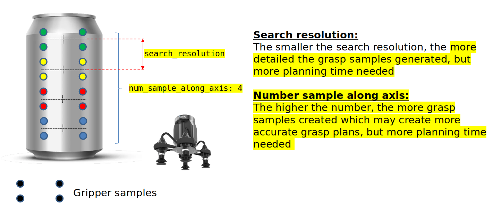
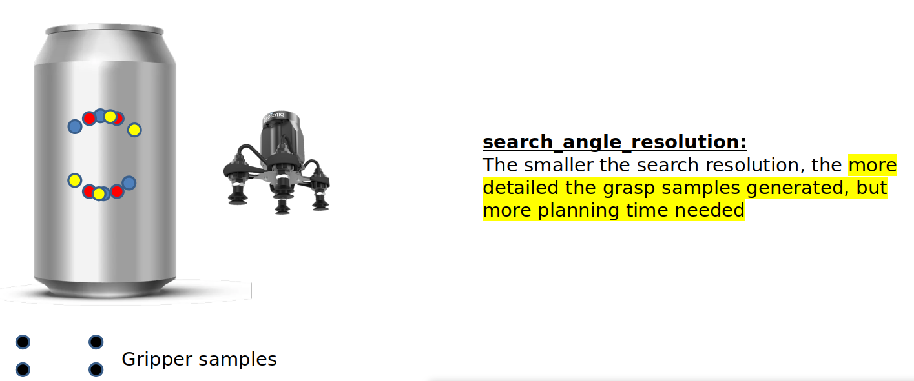
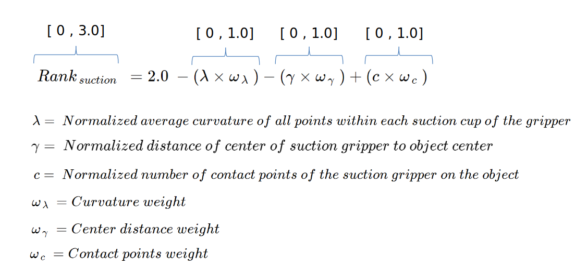

Suction Gripper¶
The parameters for Suction Gripper end effectors are as follows:
Parameter |
Description |
|---|---|
end_effector_names |
Name of end effector |
Replace ``suction_cup`` with Name of end_effector |
|
type |
suction |
num_cups_length |
Number of cups the suction gripper has lengthwise (Shown in Figure 1) |
num_cups_breadth |
Number of cups the suction gripper has breadthwise (Shown in Figure 1) |
dist_between_cups_length |
Lengthwise distance between each suction cup (Shown in Figure 1) |
dist_between_cups_breadth |
Breadthwise distance between each suction cup (Shown in Figure 1) |
cup_radius |
Radius of a single suction cup (Shown in Figure 1) |
cup_height |
Height of suction cup from surface (Shown in Figure 1) |
num_sample_along_axis |
Number of grasp samples created to search for a better grasp (Shown in Figure 2) |
search_resolution |
Resolution between the num_sample_along_axis (Shown in Figure 2) |
search_angle_resolution |
Angle resoultion in for every sample along axis (Shown in Figure 3) |
curvature |
Weights for Suction Grasp Planner Ranking formula (Default value) |
grasp_distance_to_center |
Weights for Suction Grasp Planner Ranking formula (Default value) |
number_contact_points |
Weights for Suction Grasp Planner Ranking formula (Default value) |
Determining
num_cups_length,num_cups_breadth,dist_between_cups_length,dist_between_cups_breadth,cup_radiusandcup_heightparameters are shown in Figure 1 below.
Figure 1 |
|---|
 |
Determining
num_sample_along_axisandsearch_resolutionparameters are shown in Figure 2 below.
Figure 2 |
|---|
 |
Determining
search_angle_resolutionparameter is shown in Figure 3 below.
Figure 3 |
|---|
 |
Grasp Planning Metric (Suction)¶
The possible grasps on the object are ranked by utlizing this formula. The position and orientation of the best quality grasp is then published for ref::grasp_execution_demo.